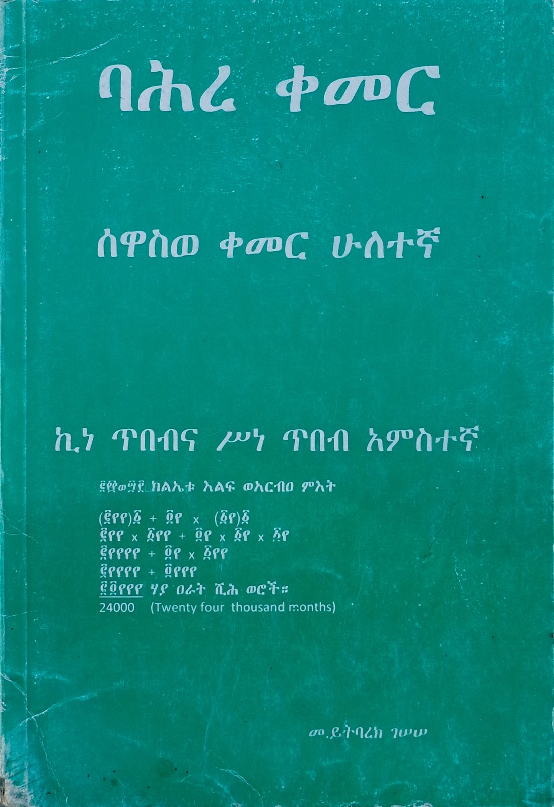
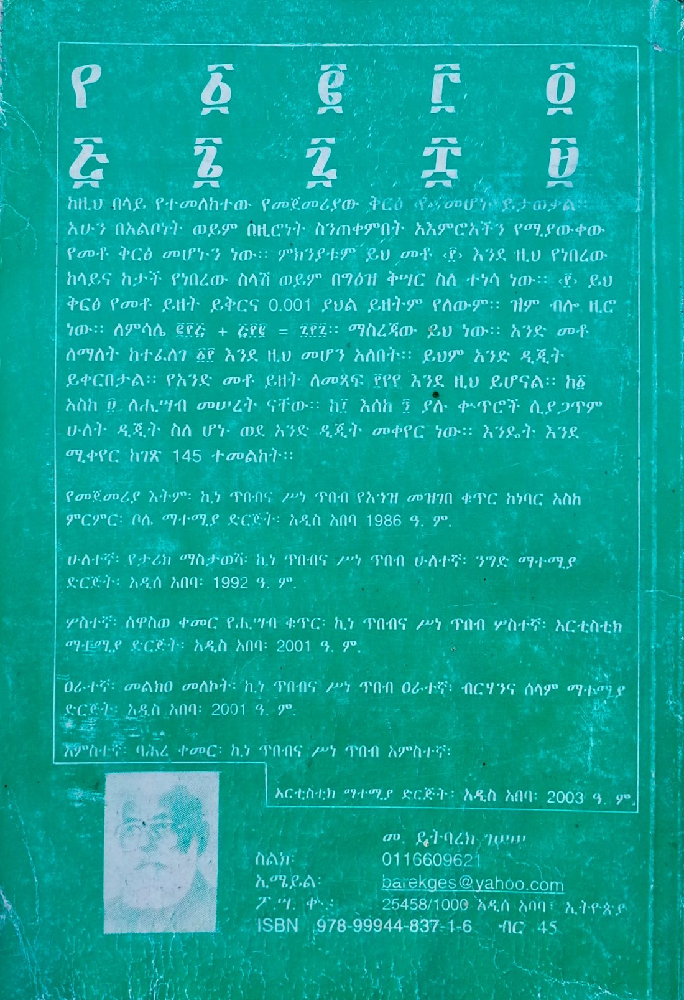

‹ ሁሉም መጻሕፍት‹ All books


ሰዋስወ ቀመር ሁለተኛSewasewe Kemer, Part Two
2003 ዓ. ም. ፡ አርቲስቲክ ማተሚያ ድርጅት ፡ 188 ገጽ2003 E.C. · Artistic Printing Press · 188 pages
የት ይገኛል? →Where to find it →
‹ ወደ መጀመሪያው ገጽBack to the first page